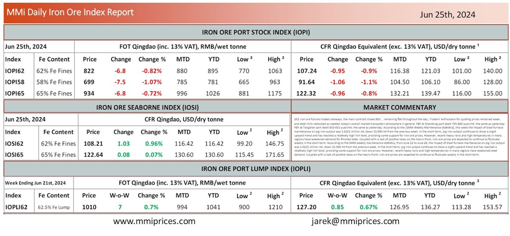

DCE iron ore futures traded sideways. the main contract closed 801，remaining flat throughout the day.; Traders’ enthusiasmfor quoting prices remained weak, and steel mills restocked as needed. today’s overall market transaction atmosphere in general. PBF at Shandong port dealt 795-800 yuan/mt; the same as yesterday. PBF at Tangshan port dealt 810-815 yuan/mt; the same as yesterday. According to the [SMM Weekly Maintenance Statistics], this week the impact of blast furnace maintenance on pig iron output was 1.0221 million mt, down 31,900 mt from the previous week. In the short term, pig iron output continues to show a slight upward trend and has reached a relatively high YoY level, providing some support for iron ore prices. However, recent heavy rains and high temperatures in many regions have weakened demand for finished steel. Coupled with a lack of positive news on the macro front, iron ore prices are expected to continue to fluctuate weakly in the short term. According to the SMM weekly maintenance statistics, from June 22 to June 28, the impact of blast furnace maintenance on pig iron output was 1.0221 million mt, down 31,900 mt from the previous week. In the short term, pig iron output continues to show a slight upward trend and has reached a relatively high YoY level, providing some support for iron ore prices. However, recent heavy rains and high temperatures in many regions have weakened steel demand. Coupled with a lack of posiƟve news on the macro front, iron ore prices are expected to continue to fluctuate weakly in the short term.

Download PDFSource: Metals Market Index (MMi)